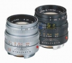

器材库 > 35mm画幅MF定焦镜头 > M 50/2 Summicron

详细规格
发布日期
1953
焦距
50mm
最大光圈
f/2
最小光圈
f/16
视角（对角）
45
镜头结构
6片/4组
滤镜口径
39mm
镜头卡口
Leica M
防抖
否
颜色
银色, 黑色
尺寸
53X43mm
重量
240g
散客2016-05-02 21:345 分
操作性 5.00耐用性 5.00性价比 5.00解像力 5.00色彩还原 5.00机械结构 5.00
anima2015-07-06 13:125 分
操作性 5.00耐用性 5.00性价比 5.00解像力 5.00色彩还原 5.00机械结构 5.00
狼影282012-05-30 10:274.67 分
操作性 4.50耐用性 4.50性价比 4.00解像力 5.00色彩还原 5.00机械结构 5.00
娄上飞2011-07-25 10:354.92 分
操作性 4.50耐用性 5.00性价比 5.00解像力 5.00色彩还原 5.00机械结构 5.00
law0072010-08-31 00:225 分
操作性 5.00耐用性 5.00性价比 5.00解像力 5.00色彩还原 5.00机械结构 5.00
beethovenno12010-08-04 23:165 分
操作性 5.00耐用性 5.00性价比 5.00解像力 5.00色彩还原 5.00机械结构 5.00
zpp2010-04-24 23:294.67 分
操作性 4.50耐用性 5.00性价比 3.50解像力 5.00色彩还原 5.00机械结构 5.00
hanyong5212010-03-12 16:064.75 分
操作性 5.00耐用性 4.50性价比 4.50解像力 5.00色彩还原 5.00机械结构 4.50
上帝武装2009-05-31 23:204.67 分
操作性 4.50耐用性 5.00性价比 4.00解像力 5.00色彩还原 4.50机械结构 5.00
novia2008-03-02 03:024.67 分
操作性 4.50耐用性 5.00性价比 4.00解像力 4.50色彩还原 5.00机械结构 5.00
枯影2007-04-02 00:574.83 分
操作性 4.50耐用性 5.00性价比 4.50解像力 5.00色彩还原 5.00机械结构 5.00
Ivanzhong2006-09-04 17:104.92 分
操作性 5.00耐用性 5.00性价比 4.50解像力 5.00色彩还原 5.00机械结构 5.00
产品图 / 样片
徕卡 M 50/2 Summicron
评测 / 相关文章
- ［试用］盘活LEICA老镜头 （存档）
- ［影像］图说几支经典徕卡M卡口镜头 （存档）
相关文章
- ［试用］盘活LEICA老镜头 （存档）
- ［影像］图说几支经典徕卡M卡口镜头 （存档）
- ［试用］老炮儿｜徕卡50mm长短方寸 f/0.95大战f/2 （原站已下线）